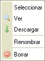

El Pánel de archivos lista los archivos disponibles en la carpeta seleccionada.
El pánel de archivos puede presentar dos vistas diferentes, dependiendo de la configuración de CKFinder (vea "Ajustes"). La siguiente, es una comparación de la vista "Miniaturas" y la vista "Lista" para la misma carpeta:

Para seleccionar un archivo, y por ende convertirlo al "archivo activo" en CKFinder, simplemente dé click sobre el archivo. Para identificar más fácilmente que el puntero del mouse está sobre un archivo, el área del mismo será coloreada. El archivo seleccionado tendrá un color de fondo diferente (generalmente Azul).
Se pueden realizar operaciones avanzadas en un archivo utilizando su "Menú de Contexto". Las siguientes opciones estan disponibles:

Nota: Algunos botones del menu de contexto, podrían estar deshabilitados, esto depende de los ajustes que su administrador haya hecho en la configuración de CKFinder.
Para seleccionar un archivo, y por ende regresarlo a la aplicación solamente dé click sobre la opción "Seleccionar".
Para previsualizar un archivo en el browser, solo dé click en el botón "Visualizar". No todos los tipos de archivos pueden ser visualizados por los browsers, pero esta caracteristica es útil para imagenes, texto y archivos del tipo PDF. En otros casos, el browser le preguntará si desea abrir el archivo con la aplicación correspondiente.
Para descargar (bajar) un archivo, solo dé click en el botón "Descargar", el bropwser le solicitará el lugar donde desea guardar el archivo en su computadora personal.
Para renombrar un archivo, solo dé click en el botón "Renombrar" en el menú de contexto. Una ventana aparecerá con el nombre actual del archivo, donde deberá escribir el nuevo nombre y confirmar la operación.
No todos los caracteres pueden ser usados para establecer un nombre de archivo, debido a limitaciones en los sistemas donde CKFinder se ejecuta. Por ejemplo, los siguientes caracteres, no pueden usarse para dar nombre a carpetas ni archivos: \ / : * ? " < > |
Atención: Al renombrar un archivo, las ligas o inserciones de medios disponibles en otras paginas que apunten a archivos o carpetas dentro de aquel que fue renombrado podrían quedar "quebradas" y por lo mismo no disponibles más. Asi que sea cauteloso cuando use esta caracteristica.
Para borrar un archivo, solo dé click en la opción "Borrar" del menú de contexto. Un mensaje de confirmación aparecerá para asegurarse que realmente esa operación es la que desea realizar.
Atención: Al borrar un archivo, las ligas o inserciones de medios disponibles en otras paginas que apunten al archivo recien borrado, quedaran "quebradas" y por ende no disponibles más, asi que sea cauteloso al utilizar esta opción.